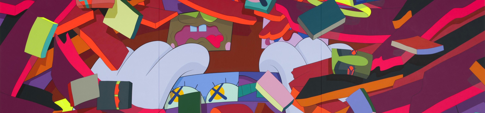
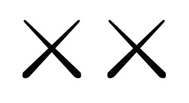
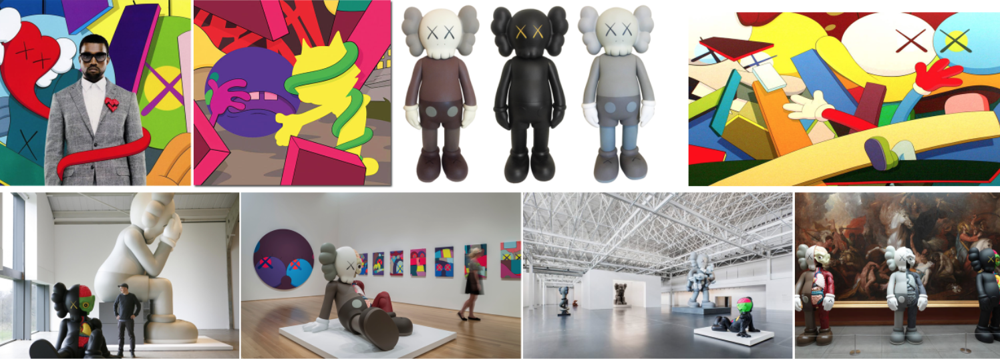

K A W S
BRIAN DONNELLY

Brian Donnelly (born 1974) – professionally known as Kaws (usually written KAWS) – is a pop artist and designer. His work includes repeated use of a cast of figurative characters and motifs, some dating back to the beginning of his career in the 1990s,[1] initially painted in 2D and later realised in 3D. Some of his characters are his own creation whilst others are reworked versions of existing icons. As he grew older, his influences came from traditional life painters, such as Gerhard Richter, Klaus Oldenberg, and Chuck Close.

Timeline
1974 Born in Jersey City, NJ
1996 BFA School of Visual Arts, New York, NY.
1998 Recipient, Pernod Liquid Art Award
1999–2003 Ontario College of Art and Design
Studied at The School of Visual Arts in New York City.
Public Collections
City Museum, San Louis, Misouri
High Museum, Atlanta, Georgia
Modern Art Museum of Fort Worth, Fort Worth, Texxas
Museum of Contemporary Art, San Diego, La Jolla, California
Nerman Museum of Contemporary Art, Overland Park, Kansas
Pizzuti Collection
Rosenblum Collection, Paris
Zabludowicz Collection, London
Click on Images For More
